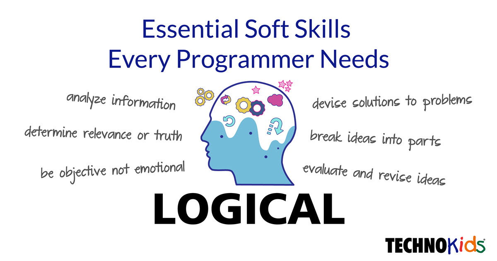
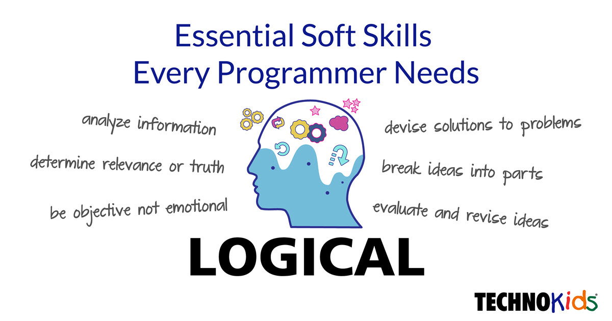

CS100 BASIC WEB DEVELOPMENT
✧₊⁺ในสัปดาห์ที่ 1 จะเรียนเกี่ยวกับพื้นฐานต่าง ๆ ตัวอย่างของเนื้อหา เช่น
อินเตอร์เน็ต คือ เครือข่ายที่ใหญ่ที่สุดในโลก เชื่อมทุกอย่างไว้เข้าด้วยกัน
องค์ประกอบของ www มี 4 ส่วน ได้แก่
1.Web servers
- running web server program and several-side script/program
2.Web client
- running web browsers เช่น Chrome, safari, Firefox, Microsoft Edge
3.Web server machines
4.Web client machines
✧₊⁺ในสัปดาห์ที่ 2 จะเรียนเกี่ยวกับ Basic HTML ตัวอย่างเนื้อหา เช่น
IDE คือการประยุกต์ซอฟแวร์โดยการนำเครื่องมือสำหรับการพัฒนามาใช้ในที่เดียวกัน เช่น vs code
-HTML คือ backbone ขอบเว็บ เป็นการขึ้นโครงของหน้าเว็บ
ประกอบด้วยส่วน head tag กับ body tag โดยเนื้อหาที่ต้องการให้ขึ้นตรงหน้าเว็บจะเรียกว่า content
-โครงสร้างของ HTML ประกอบไปด้วย tags, attributes และ content
-ถ้าต้องการเพิ่มความสวยงามให้กับหน้าเว็บเราจะใช้ CSS stylesheets ช่วย จะช่วยเกี่ยวกับฟอนต์ สี และการจัดเรียงต่างๆ
✧₊⁺ในสัปดาห์ที่ 3 จะเป็นภาคปฏิบัติการเขียนเว็บด้วย Html และ CSS
มีแบบฝึกหัดมาให้ทำ การเปลี่ยนขนาดตัวอักษรหน้าเว็บ เพิ่มสีตัวอักษร
สอนใช้ tag ต่างๆ แล้วสอนวิธีการนำ css มาเชื่อมกับ html

 
